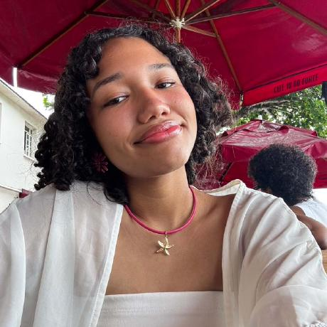

Maria Luiza
Desenvolvedora de SistemasEstudante de ADS apaixonada por cibersegurança, com interesse em análise de vulnerabilidades, proteção de sistemas e práticas de desenvolvimento seguro.
Ver ProjetosSomos estudantes de Análise e Desenvolvimento de Sistemas. Este projeto une o desenvolvimento de interfaces modernas e responsivas à estruturação lógica de sistemas web. Escolha um dos perfis abaixo para explorar nossos projetos e habilidades individuais.


Estudante de ADS apaixonada por cibersegurança, com interesse em análise de vulnerabilidades, proteção de sistemas e práticas de desenvolvimento seguro.
Ver ProjetosEstudante de ADS apaixonado por engenharia de software, modelagem de dados e estruturação da lógica de aplicações web.
Ver Projetos